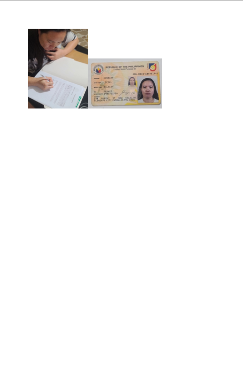
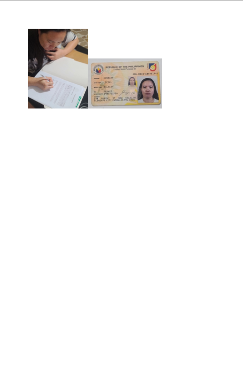

Hello, I'm
David Bryan
Candido
Welcome to My Practicum 1 Portfolio
This site contains all required documents and media related to my On-the-Job Training experience.

Modern Resume
Here you can view my resume, a summary of my skills, experience, and educational background. This document highlights my qualifications and my journey in web development.
Documentation
This documentation provides a comprehensive summary of my activities and key learnings throughout my OJT. It covers my weekly progress, project details, and the skills I developed during my time at LGU Barangay New Kalalake.
Click to view a summary of my OJT journey
Summary of OJT Activities
During my OJT from June 30 to August 1, 2025, at LGU Barangay New Kalalake, my primary focus was on the development of a Barangay Management System. This project was a major undertaking that allowed me to apply my skills in web development to create a practical and useful application for the local government unit.
I was specifically assigned to develop the Front Desk Module, which involved creating features for certificate generation and comprehensive resident record management. This role required me to not only write code but also to engage in the full software development lifecycle—from initial planning and system flow design to UI developmen and database integration.
Throughout the five-week period, I successfully designed and implemented the user interface for the main Dashboard, Residents Management, and Certificate Issuance pages. A key part of my work involved designing the database schema for resident information and integrating various modals to streamline the user experience for adding, editing, and generating documents. I also implemented crucial functionalities like automatic age calculation and a toast notification system for user feedback. My journey culminated in the finalization of the UI and the successful integration of both front-end and back-end logic for the assigned modules.
Endorsement & Acceptance
These are the official letters of endorsement from my school and acceptance from the host company, LGU Barangay New Kalalake, formalizing my On-the-Job Training.

Application Letter
My formal application letter submitted to LGU Barangay New Kalalake to request an On-the-Job Training position.

16 Personality Test Result
This is the result of my 16 Personalities Test, providing insights into my personality type, strengths, and preferred working style.
Parent Consent
A required document granting parental consent for my participation in the On-the-Job Training program.
 

Company Profile
Details about the company where I conducted my OJT, including their mission and my direct supervisor's contact information.
Company: LGU Barangay New Kalalake
Supervisor: Secretary Percival T. Roxas
Email: percyeditor@gmail.com
Practicum VLOG
Watch my practicum VLOG to see a personal video diary of my On-the-Job Training experience, including my daily activities and reflections.